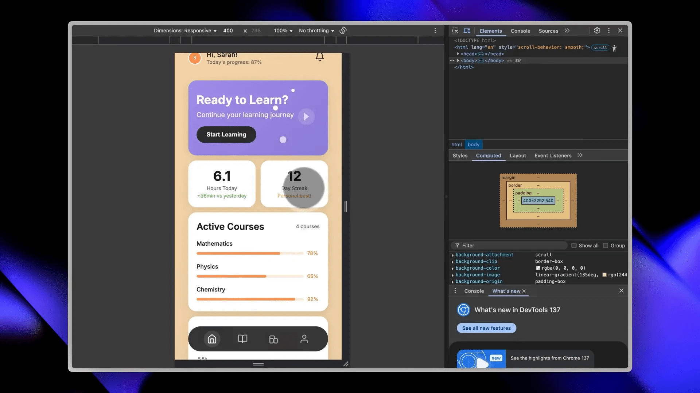
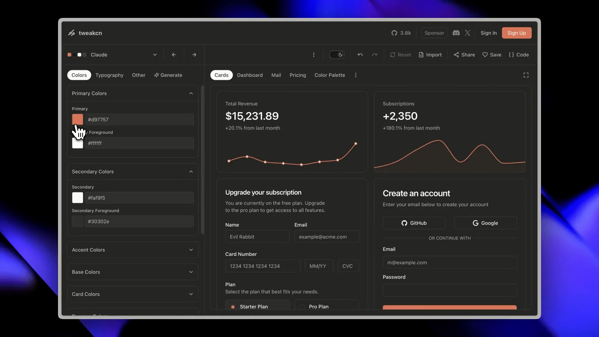
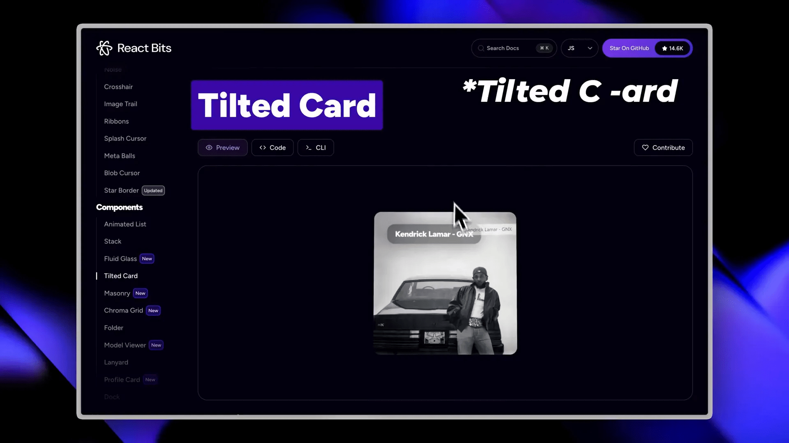
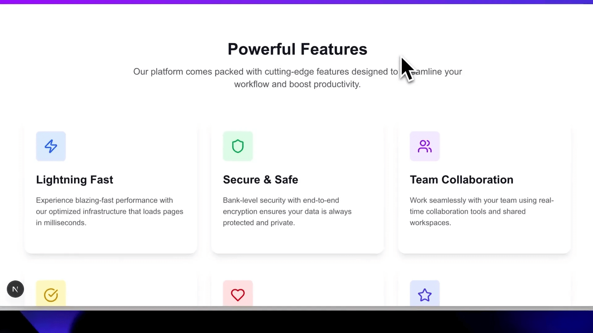
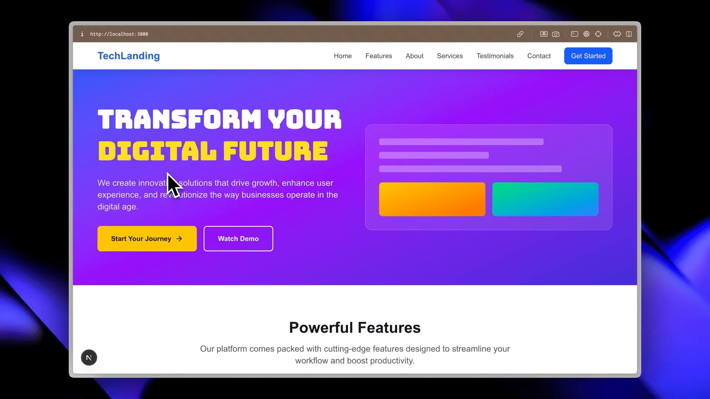
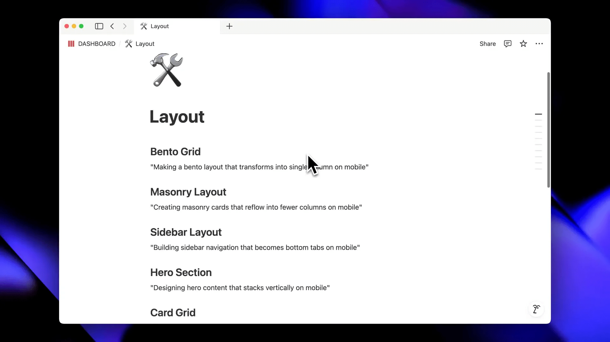

Se você já tentou criar um website usando ferramentas de inteligência artificial como Cursor AI, Claude ou ChatGPT, provavelmente já percebeu um problema comum: os designs gerados automaticamente parecem genéricos, pouco inspiradores e longe de serem profissionais. Mas a verdade é que o problema não está na IA em si, e sim na forma como você a utiliza. Neste artigo, inspirado por um guia completo criado pelo AI LABS, vamos explorar três métodos comprovados e truques que irão elevar seu processo de desenvolvimento web com IA a um nível totalmente novo. Prepare-se para transformar seus projetos com técnicas que realmente funcionam, desde replicar designs sofisticados até criar interfaces originais e adicionar componentes premium que dão vida aos seus websites.
Este artigo é uma leitura essencial para quem quer dominar o uso da Vibecoding Cursor Bolt Lovable Replit AI e criar websites que se destacam pela beleza, funcionalidade e profissionalismo. Vamos cobrir tudo: clonagem de designs, personalização com TweakCN, uso de bibliotecas React avançadas, animações sutis, escolha de fontes e layouts responsivos que fazem toda a diferença. Se você está pronto para deixar para trás os designs chatos e abraçar uma abordagem inteligente para o desenvolvimento web com IA, continue lendo!
Table of Contents
- 📋 Entendendo o Problema: Por Que Seus Websites Gerados por IA Parecem Ruins?
- 🎨 Método 1: Clonando Designs Existentes com Sistemas de Design JSON
- 🛠️ Método 2: Criando Designs Originais com TweakCN e ShadCN UI
- 🚀 Método 3: Elevando Seu Projeto com Componentes Premium React
- ✨ Técnicas Essenciais para Diferenciar Projetos Amadores de Profissionais
- 🔗 Recursos Extras para Criar Websites e Apps Bonitos
- ❓ FAQ: Perguntas Frequentes Sobre Vibecoding Cursor Bolt Lovable Replit AI
- 🔚 Conclusão: Transforme Seus Projetos com Vibecoding Cursor Bolt Lovable Replit AI
📋 Entendendo o Problema: Por Que Seus Websites Gerados por IA Parecem Ruins?
Muitos desenvolvedores e entusiastas de IA cometem o mesmo erro: ao usar ferramentas como Cursor ou Claude, simplesmente digitam comandos genéricos como “make it beautiful” ou “make it look professional” e esperam que a mágica aconteça. O resultado? Websites que parecem idênticos uns aos outros, com layouts previsíveis, cores sem personalidade e uma sensação geral de amadorismo.
O problema fundamental não é a inteligência artificial, que é uma tecnologia incrivelmente poderosa e capaz de produzir resultados surpreendentes. O problema está em como você está orientando a IA. Sem uma direção clara, a IA gera um produto “bonito” segundo seus padrões internos, que muitas vezes são limitados a estilos comuns e repetitivos.
Para realmente aproveitar o potencial da Vibecoding Cursor Bolt Lovable Replit AI, é preciso fornecer informações detalhadas, usar ferramentas que extraem estilos visuais precisos e incorporar componentes sofisticados que elevam o design. Vamos explorar como fazer isso, começando pelo método mais direto: clonar um design já existente.
🎨 Método 1: Clonando Designs Existentes com Sistemas de Design JSON
Se você tem um design que admira e deseja replicá-lo fielmente, o primeiro método é perfeito para você. A ideia é extrair um perfil de design detalhado do site, aplicativo web ou mobile que você quer copiar, e usar esse perfil para guiar a IA na criação do seu projeto.
Como isso funciona?
- Escolha um design que você quer replicar. Pode ser qualquer coisa: um site, dashboard, app mobile.
- Peça a qualquer IA, como Claude ou ChatGPT, para criar um sistema de design JSON que extraia todos os dados visuais daquele design. Isso inclui cores, tipografia, espaçamento, estilos de botão, estrutura e mais.
- Forneça esse arquivo JSON para o Cursor AI e peça para ele construir seu projeto seguindo as especificações do design JSON.
O resultado é um site com estilo consistente e que replica o design original quase que perfeitamente. Você não precisa ficar pedindo para a IA “fazer bonito” — ela já tem todas as informações necessárias para entregar um produto com aparência profissional.
Por exemplo, em um teste prático, criamos um dashboard educacional completo. No prompt, apenas pedimos que o app fosse feito em HTML, CSS e JavaScript, seguindo o arquivo design.json gerado pela IA. O Cursor AI entregou um app com notificações limpas, layout atraente e uma barra de navegação elegante, tudo alinhado com o design original que serviu de base.

Esse método é ideal quando você tem uma referência visual clara e quer garantir que seu projeto tenha uma identidade visual sólida e profissional sem o risco de designs genéricos.
🛠️ Método 2: Criando Designs Originais com TweakCN e ShadCN UI
Mas e se você não quer copiar um design existente e prefere criar algo totalmente original? Para isso, apresento o TweakCN, um site incrível que permite configurar seu próprio sistema UI baseado em ShadCN UI, uma coleção moderna de componentes para React.
Se você não está familiarizado com ShadCN UI ou com o conceito de componentes em desenvolvimento web, não se preocupe. O TweakCN oferece uma interface intuitiva que facilita a personalização visual de cada aspecto do sistema de design.
Ao acessar o site, você verá uma interface de pré-visualização onde, do lado esquerdo, pode ajustar cores, tipografia, sombras e muito mais. Por exemplo, você pode mudar a cor primária arrastando um slider e ver a alteração em tempo real. Além disso, é possível configurar cores de destaque, base, cartões e até sombras para criar efeitos sutis que fazem toda a diferença.

A tipografia também é totalmente personalizável, permitindo escolher fontes que combinem com a vibe do seu projeto. E o melhor: você pode visualizar seu design em modo claro e escuro, garantindo que seu app fique bonito em qualquer tema.
Quando estiver satisfeito com sua criação, basta ir até a aba de código, copiar o CSS gerado e colar em seu arquivo index.css. Depois, peça para o Cursor AI construir seu projeto a partir desse arquivo, e ele fará o resto.
Esse método é excelente para quem quer um controle total sobre o visual do seu site ou app, sem depender apenas de prompts vagos para a IA. Você define a base estética e deixa o Cursor cuidar da estrutura e funcionalidade.
🚀 Método 3: Elevando Seu Projeto com Componentes Premium React
Os métodos um e dois focam em garantir uma base sólida para o design e estilo do seu projeto. Agora, vamos para o próximo nível: usar componentes React premium para dar um toque profissional e moderno, especialmente para quem trabalha com aplicações web em React.
Existem diversas bibliotecas de componentes React que trazem animações, interatividade e estilos sofisticados prontos para usar. Um exemplo fantástico é a biblioteca React Bits, que oferece componentes animados que impressionam pelo visual e pela fluidez.

No vídeo original, usamos um componente chamado Tinted Card, que adiciona um efeito 3D de inclinação ao cartão conforme o cursor se move sobre ele. Esse efeito dá uma sensação de profundidade e dinamismo que transforma um layout simples em algo muito mais profissional e atrativo.
Você pode instalar esses componentes diretamente ou copiar o código para personalizar antes de incorporar ao seu app. No exemplo, copiamos o código do Tinted Card, incluindo a dependência framer-motion necessária para as animações. Em seguida, pedimos ao Cursor para substituir os cartões básicos do nosso landing page por esses componentes avançados, garantindo que todas as dependências fossem instaladas.
O resultado? Cartões que respondem ao movimento do mouse com uma rotação suave e elegante, elevando instantaneamente o padrão visual da página.

Vale mencionar que a integração pode apresentar pequenos desafios, como placeholders automáticos ou imagens de fundo que precisam ser removidas manualmente. Mas, com comandos claros e ajustes rápidos, o Cursor AI responde prontamente e resolve esses detalhes.
✨ Técnicas Essenciais para Diferenciar Projetos Amadores de Profissionais
Agora que você conhece os três métodos principais para criar designs bonitos e funcionais com IA, vamos falar sobre técnicas e detalhes que fazem a diferença entre um projeto amador e um profissional. São elementos cruciais para quem quer impressionar com qualidade e sofisticação.
🎞️ Animações: Menos é Mais
Quando o assunto é animação, o maior erro é exagerar. Pedir para a IA animar tudo pode transformar seu site em uma experiência cansativa e pouco profissional. A chave é ser específico e selecionar microinterações e movimentos sutis que elevam a usabilidade e o apelo visual sem distrair o usuário.
Turbine seu Desenvolvimento com Prompts!
Você já sonhou em criar seu próprio aplicativo mas pensou que precisaria ser um gênio da programação? Chegou a hora de transformar esse sonho em realidade! Com as ferramentas no-code de hoje, você pode criar aplicativos profissionais sem escrever uma única linha de código.
Quer adicionar um efeito 3D ou uma animação suave? Pergunte diretamente para o ChatGPT ou Claude como formular um prompt para o Cursor AI que implemente exatamente aquele efeito na seção desejada. Por exemplo, em vez de pedir “anime tudo”, diga “adicione um efeito de fade suave no carregamento da seção X” ou “adicione uma rotação leve ao passar o mouse sobre o botão Y”.
Essas animações pequenas, porém estratégicas, são o que tornam o design mais profissional e agradável.
🔤 Tipografia: Escolha Fontes que Combinam com o Projeto
Outro elemento que eleva instantaneamente o nível do seu projeto é a tipografia. Usar fontes que transmitam a vibe certa pode transformar um site simples em uma experiência memorável.
Para encontrar a fonte perfeita, o Google Fonts é seu melhor aliado. Com uma vasta biblioteca e filtros que ajudam a encontrar estilos artísticos variados, você pode escolher fontes que se encaixam perfeitamente no tom do seu projeto.
Por exemplo, para um site com um hero section impactante, você pode escolher uma fonte que transmita modernidade e confiança. O Google Fonts oferece um código de incorporação fácil de usar, que você pode passar para o Cursor AI para que ele importe e aplique essa fonte exatamente onde quiser.

Essa atenção aos detalhes em tipografia pode fazer uma diferença dramática na percepção do seu site, tornando-o mais profissional e alinhado com sua identidade visual.
📐 Layouts: Seja Específico para Evitar Bugs e Problemas
Muitos desenvolvedores pedem para a IA “fazer o site responsivo”, mas isso raramente é suficiente para garantir um layout perfeito. Layouts precisam ser especificados com clareza para que funcionem bem em todas as telas e dispositivos.
Por exemplo, em vez de um comando genérico, diga para a IA criar um layout tipo bento que se reorganize para uma única coluna em dispositivos móveis. Essa especificidade ajuda a evitar bugs e garante uma experiência do usuário suave e coerente.

Outros exemplos de layouts que você pode especificar incluem grids, colunas flexíveis, layouts em cartões, entre outros. Quanto mais claro for seu comando, melhor será o resultado.
🔗 Recursos Extras para Criar Websites e Apps Bonitos
Além dos métodos e técnicas que discutimos, aqui estão alguns links úteis para você explorar e incorporar em seus projetos:
- React Bits — Biblioteca de componentes React animados.
- 21st Dev — Recursos avançados para desenvolvimento web.
- TweakCN — Personalização de sistemas UI com ShadCN UI.
- Magic UI Pro — Componentes premium para projetos React.
- Align UI Pro — Componentes e layouts avançados.
- Bento Grids — Layouts flexíveis para projetos responsivos.
- Grainient Freebies — Gradientes e recursos visuais grátis.
Explore essas ferramentas e veja como combiná-las com a Vibecoding Cursor Bolt Lovable Replit AI para criar resultados surpreendentes.
❓ FAQ: Perguntas Frequentes Sobre Vibecoding Cursor Bolt Lovable Replit AI
O que é Vibecoding Cursor Bolt Lovable Replit AI?
É uma abordagem moderna que combina ferramentas de inteligência artificial, como Cursor AI, Claude e ChatGPT, para acelerar e aprimorar o desenvolvimento web, focando em design, layout e componentes interativos.
Por que meus websites gerados por IA parecem genéricos?
Porque comandos vagos como “make it beautiful” não fornecem informações suficientes para a IA criar designs originais e sofisticados. É preciso dar diretrizes claras e usar métodos como design JSON, personalização via TweakCN e componentes premium.
Como posso garantir que meu site tenha um design consistente?
Usando um sistema de design JSON extraído de um modelo existente ou criando seu próprio sistema visual com ferramentas como TweakCN, você fornece uma base clara para a IA seguir.
Quais são os melhores recursos para fontes e animações?
Google Fonts é a melhor fonte para tipografia personalizada, e bibliotecas como React Bits oferecem animações sofisticadas e microinterações que elevam o visual do seu site.
Como evitar problemas ao integrar componentes React complexos?
Forneça à IA todas as dependências necessárias, como framer-motion, e esteja pronto para ajustar pequenos detalhes, como imagens de fundo e placeholders, com comandos específicos.
O que devo evitar ao usar animações em meu site?
Evite animar tudo indiscriminadamente. Animações devem ser sutis e específicas para melhorar a experiência do usuário, não para distrair ou sobrecarregar.
🔚 Conclusão: Transforme Seus Projetos com Vibecoding Cursor Bolt Lovable Replit AI
Dominar o uso da Vibecoding Cursor Bolt Lovable Replit AI não é apenas sobre usar a IA para gerar código, mas sim sobre como orientar essa inteligência para maximizar o impacto visual e funcional do seu website. Com os três métodos apresentados — clonar designs com JSON, criar sistemas visuais originais com TweakCN e integrar componentes React premium — você tem uma base poderosa para criar projetos que realmente se destacam.
Lembre-se: detalhes fazem toda a diferença. Invista tempo em escolher as fontes certas, criar animações sutis e definir layouts específicos para garantir que seu site seja não apenas bonito, mas também profissional e funcional.
Experimente pelo menos um desses métodos em seu próximo projeto e veja a transformação acontecer. Com as ferramentas e técnicas certas, a Vibecoding Cursor Bolt Lovable Replit AI pode ser seu maior aliado para construir websites que impressionam e encantam.
Se você gostou dessas dicas e quer continuar recebendo conteúdos que ajudam a elevar seu desenvolvimento web com IA, não deixe de explorar os recursos mencionados e seguir os canais de especialistas na área.